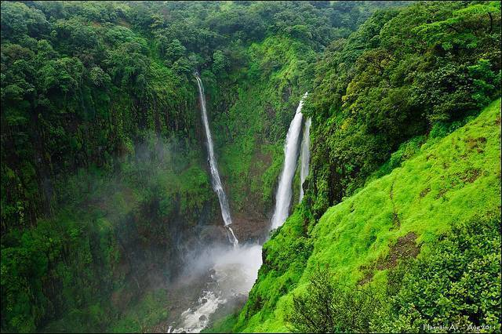
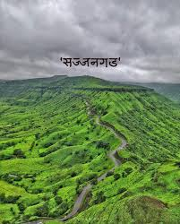
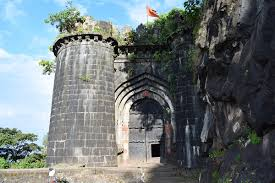

Popular Attractions
Discover the best places to visit in Satara - from historic forts to natural wonders

Nature
Kaas Plateau
UNESCO World Heritage Site known for its stunning biodiversity and wildflowers. Best visited during monsoon season.
25 km from Satara
Half Day

Waterfall
Thoseghar Waterfall
Spectacular waterfall cascading from 500 feet. A must-visit during monsoon for breathtaking views.
22 km from Satara
Half Day

Heritage | Pilgrimage
Sajjangad Fort
Sacred fort and final resting place of Sant Ramdas, spiritual guru of Shivaji Maharaj.
18 km from Satara
Half Day

Heritage
Ajinkyatara Fort
Historic fort at 3,300 feet offering panoramic views of Satara city and surrounding valleys.
4 km from Satara
2-3 Hours

Nature
Koyna Dam
One of the largest dams in Maharashtra, surrounded by lush greenery and scenic beauty.
60 km from Satara
Full Day

Nature
Chalkewadi Windmill Farms
Asia's largest windmill farm with breathtaking views and endless rows of wind turbines.
28 km from Satara
Half Day